The practical guide to visiting France.
What to see, how to get there, what to book: short guides from Paris to the French Riviera and from the Alps to Brittany.
Photo: Léonard Cotte / Unsplash
Regions
 Paris
51 guides
Paris
51 guides
Paris works all year round, and winter is the best season for museums. You just need to know what to book, which day each place is closed and when to turn up.
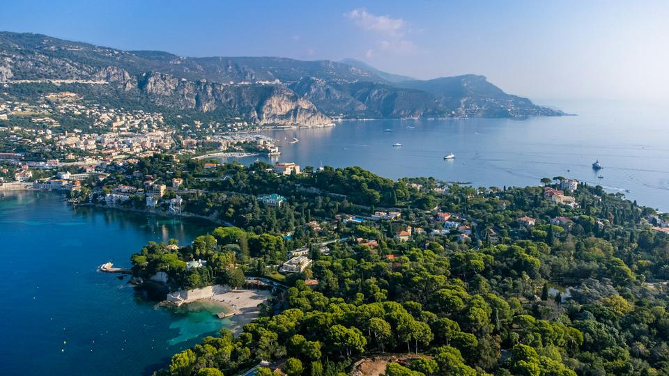
French Riviera 55 guidesHilltop villages, islands fifteen minutes from the Croisette, legendary harbours: the Riviera is easy to explore without a car, as long as you know where to go and when.
 French Alps
21 guides
French Alps
21 guides
Huge linked ski areas, charming villages and peaks above 3,000 metres: the 2026-2027 season starts on 21 November in the highest resorts.
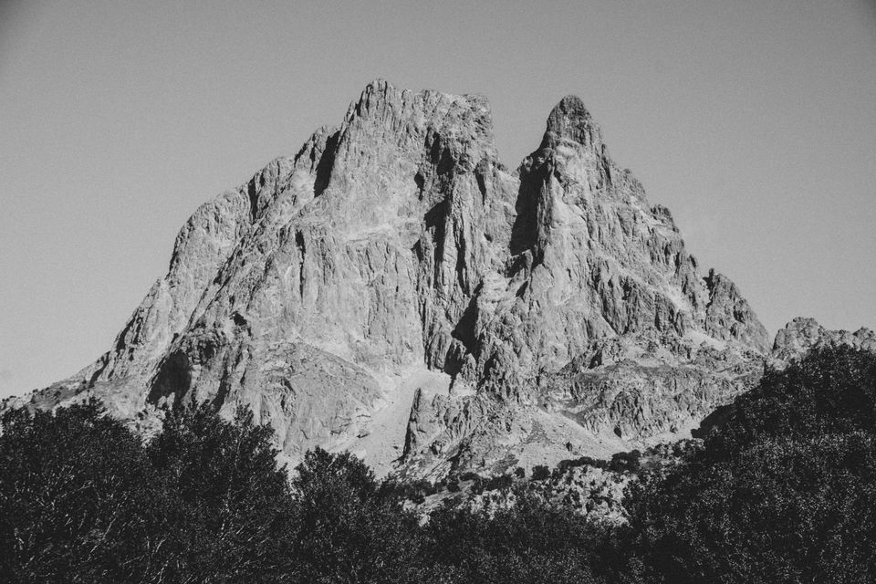
Pyrenees 5 guidesFont-Romeu, Saint-Lary, the Grand Tourmalet: sunny, more affordable resorts, open from late November 2026.
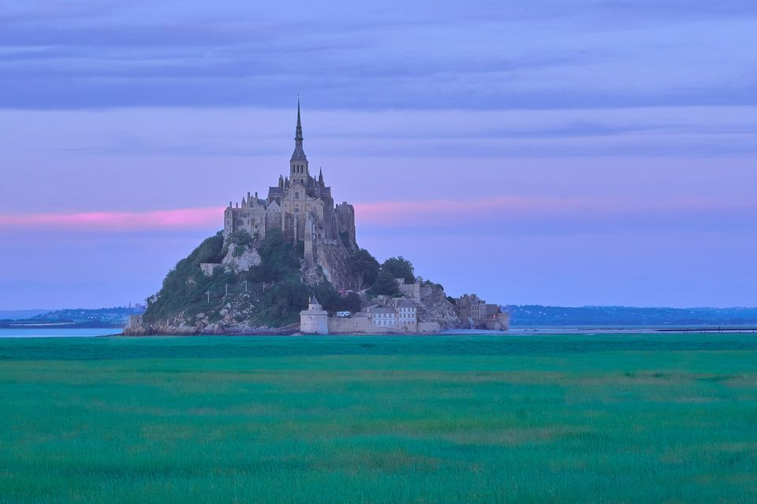
Normandy 5 guidesMont-Saint-Michel, the Étretat cliffs, Honfleur and the D-Day beaches: the great getaway a few hours from Paris.
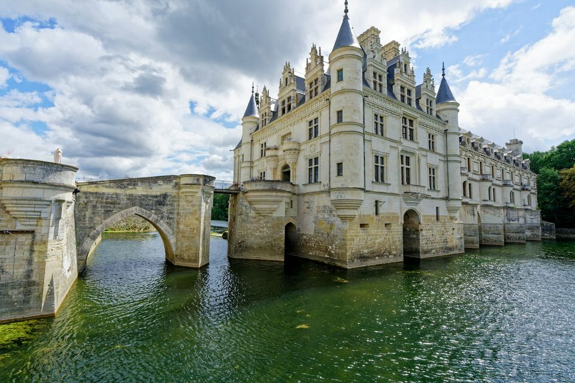
Loire Valley 4 guidesChambord, Chenonceau, Amboise and Villandry: the great Renaissance châteaux, two hours from Paris.
 Provence
9 guides
Provence
9 guides
Avignon, Aix, Marseille, the calanques and the hilltop villages: Provence all year round.
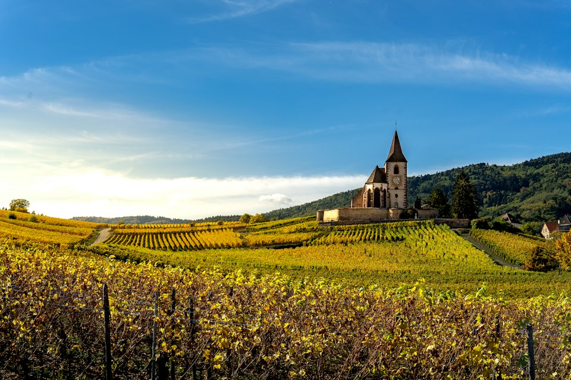
Alsace 4 guidesStrasbourg, Colmar and the wine villages: from late November to late December, the finest Christmas markets in France.
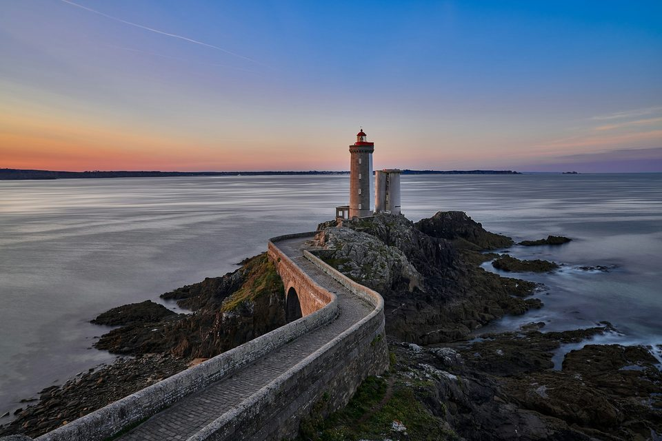
Brittany 6 guidesSaint-Malo, Dinan, Carnac and the Pink Granite Coast: corsair ramparts, standing stones and wild coastlines, all year round.
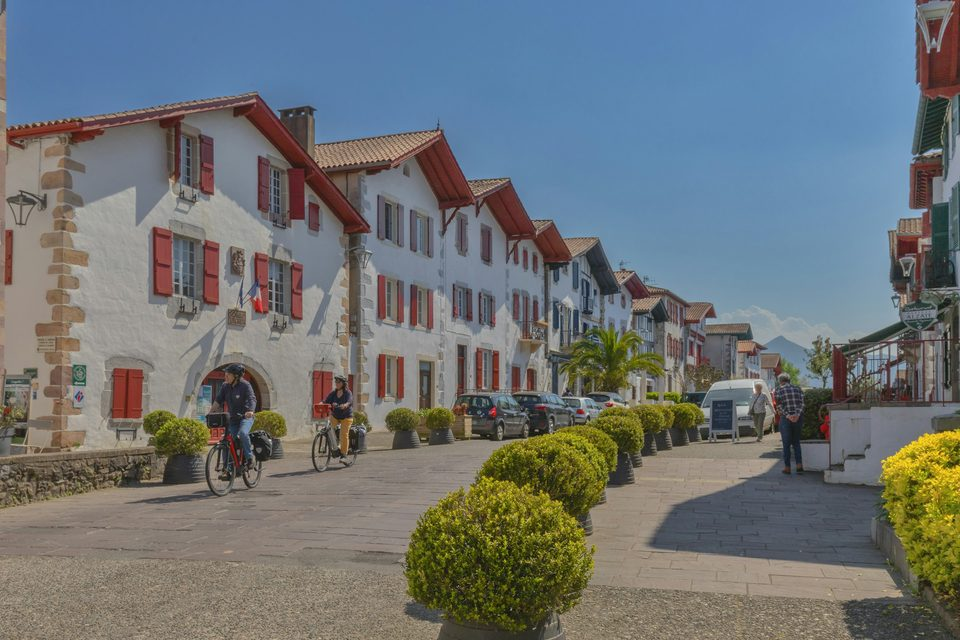
Basque Country 4 guidesBiarritz, Saint-Jean-de-Luz, Bayonne and Espelette: surf, fishing ports and white and red villages below La Rhune.
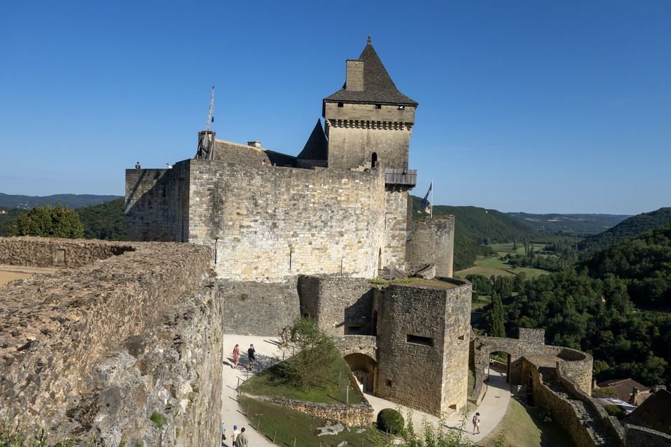
Aquitaine 12 guidesBordeaux, Saint-Émilion, the Dune du Pilat, Sarlat and the castles of the Dordogne valley.
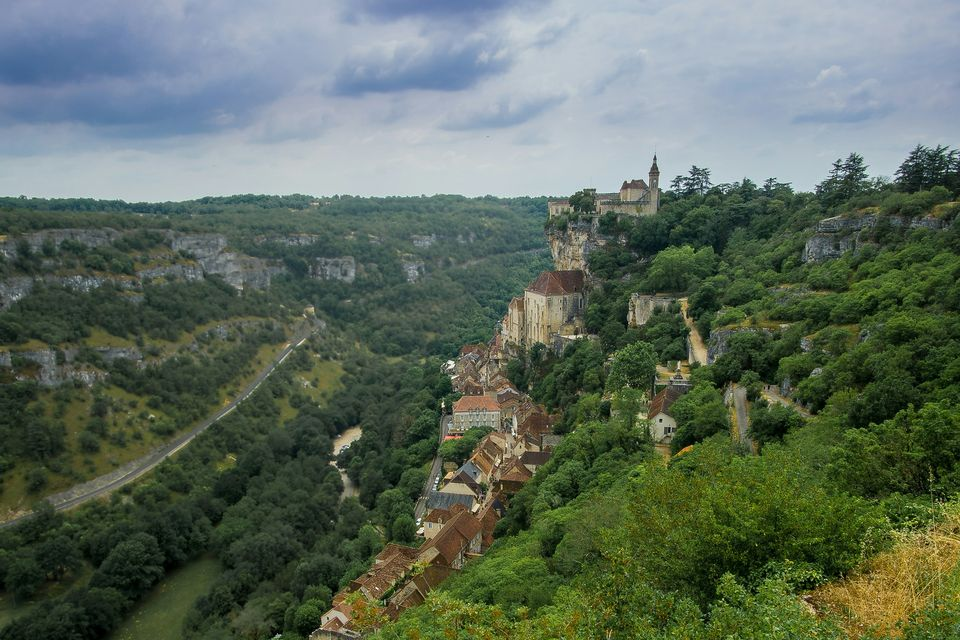
Lot 3 guidesThe Gouffre de Padirac, Rocamadour and Saint-Cirq-Lapopie, between plateaus and valleys.
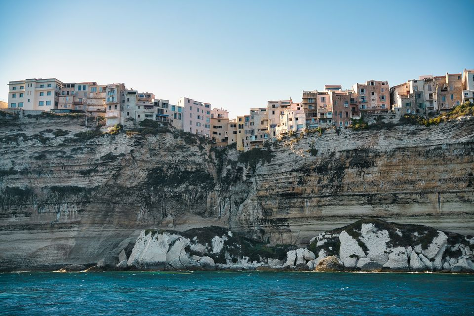
Corsica 8 guidesAjaccio, Bastia, Bonifacio, Porto-Vecchio and the Lavezzi Islands, between citadels and beaches.
Ideas for this winter
-
 Where to go this winter
Where to go this winterReliable snow up high, Christmas lights in Paris or Mediterranean mildness: winter is a great season to travel in France, as long as you pick your dates well.
-
 Paris in winter
Paris in winterChristmas lights, Christmas markets, major exhibitions and late-opening museums: winter is a great season to visit Paris, with fewer crowds at the monuments.
-
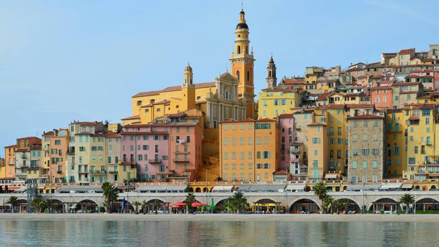
Riviera in winterFewer crowds, beautiful light and the great February festivals: winter is the connoisseurs’ favourite season for discovering the Riviera.
-
 Ski opening dates
Ski opening datesKeen to ski early? Here are the opening dates announced by the big Alpine resorts for the 2026-2027 season, from earliest to latest.
Paris highlights
-
 Eiffel Tower
Eiffel TowerThree levels, over 300 metres and the most famous view in Paris. Plan ahead: official tickets, the right time slot and, if your legs are up to it, the stairs.
-
 Louvre
LouvreYou cannot see the world’s largest museum in one go: you plan it. Book your time slot, pick three or four sections and avoid Tuesday, when it is closed.
-
 Notre-Dame
Notre-DameReopened in December 2024 after the fire, the cathedral has its pale stone and its light back. Entry is free; booking a slot saves a lot of time.
-
 Montmartre
MontmartreA village on a hill above Paris: steps, vines, painters’ studios and, at the top, the white basilica of the Sacré-Cœur.
-
 Musée d’Orsay
Musée d’OrsayMonet, Renoir, Van Gogh, Degas: the world’s largest Impressionist collection, in a former railway station. Thursday’s late opening is the best time to go.
-
 Versailles
VersaillesThe Hall of Mirrors, the King’s apartments, Le Nôtre’s gardens and Marie-Antoinette’s estate: a full day out, forty minutes from Paris.
French Riviera highlights
-
 Nice
NiceThe capital of the Riviera: a huge bay, an old town of ochre façades and museums worthy of the greatest cities.
-
 Monaco
MonacoTwo square kilometres, a palace, a casino and one of Europe’s finest sea museums. Monaco is easy to see on foot in a day.
-
 Èze
ÈzeA medieval village clinging to its rock more than 400 metres above the sea. The view from the garden at the very top is worth the climb on its own.
-
 Cannes
CannesMuch more than a festival: a hilltop old town, a covered Provençal market and two wild islands fifteen minutes away by boat.
-
 Lérins Islands
Lérins IslandsFifteen minutes by boat from the Croisette, two car-free islands: pine woods, coves, a fort where the Man in the Iron Mask was held, and an abbey where monks still live.
-
 Saint-Tropez
Saint-TropezA former fishing village turned legend. Out of season Saint-Tropez is a little Provençal port again; in summer, arrive by sea.
See all 38 French Riviera guidesThe French Riviera in 3 days
French Alps highlights
-
 Chamonix
ChamonixThe capital of mountaineering, facing Mont Blanc. People come to ski, but also to go up to almost 3,900 metres without being climbers.
-
Val Thorens
At 2,300 metres, Val Thorens is the highest ski resort in Europe. It opens first and closes last: from late November to early May.
-
 Courchevel
CourchevelPerfectly groomed pistes, an altiport and grand hotels: Courchevel is the most prestigious resort in the Alps, and also an excellent ski area for every level.
-
Megève
A real Savoyard village, horse-drawn carriages in the streets and tree-lined slopes facing Mont Blanc. Megève is the classic chic, gentle ski resort.